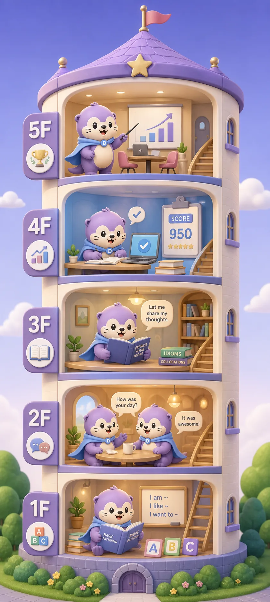

1F — Foundation Zone
지식·기초회화·패턴 학습을 통해 영어 문장을 만들어 말하는 힘을 기릅니다. 영어가 두렵지 않고 입이 열리기 시작하는 단계입니다.
정해진 교재를 따라가는 수업이 아닙니다. 레벨테스트로 출발점을 찾고, 생활·직무·시험 목표에 맞춰 말하기 단계를 세밀하게 설계합니다.
한 단계씩 올라가며 말하기 실력이 눈에 보이게 성장합니다. 초보자부터 고급 스피킹까지 현재 수준에서 출발해 최종 목표까지 함께 올라갑니다.
지식·기초회화·패턴 학습을 통해 영어 문장을 만들어 말하는 힘을 기릅니다. 영어가 두렵지 않고 입이 열리기 시작하는 단계입니다.
실생활 표현·스몰토크·실전대화를 통해 일상에서 자연스럽게 말하는 감각을 만듭니다. 이해하는 영어가 말하는 영어로 바뀝니다.
표현 확장과 상황별 대화를 연습하며 말의 길이와 표현력을 키웁니다. 대화가 자연스럽게 이어지는 영어를 완성합니다.
TOEIC Speaking·OPIc·면접·스피치 등 결과로 증명되는 스피킹 실력을 만듭니다. 점수와 실제 말하기를 함께 잡습니다.
비즈니스 커뮤니케이션·프리토킹·고급 응대 표현 등 현장에서 바로 쓰는 영어를 연습합니다. 영어로 일하는 사람이 되는 단계입니다.

레벨테스트 결과와 실제 영어 사용 목적을 함께 반영해 가장 필요한 과정부터 시작합니다.

생활 속 질문과 대답, 스몰토크에 자연스럽게 반응하는 힘을 만듭니다.

회의, 이메일, 발표, 협상 등 실제 업무에 바로 사용하는 표현을 훈련합니다.

공항, 숙소, 식당과 현지 생활에서 당황하지 않고 말하는 실전 영어를 익힙니다.

경험과 강점을 영어로 구조화하고 글로벌 채용 상황에 맞게 전달합니다.

목표 등급에 맞춘 모의 테스트와 약점 보완으로 점수와 말하기를 함께 준비합니다.
같은 레벨이라도 현재 생활과 학습 습관에 따라 시작 방법은 달라집니다. 나와 가까운 가이드에서 필요한 과정과 관리 방식을 먼저 확인하세요.
Foundation Zone부터 짧은 반응과 기본 문장을 쌓아 실제 대화로 넘어가는 학습 순서를 안내합니다.
왕초보 시작 방법 보기 → GOAL TRACK · ADULT일상·업무·여행 목표에 맞춰 어떤 과정과 수업 방식을 선택해야 하는지 구체적으로 확인할 수 있습니다.
성인 영어회화 가이드 보기 → ALL LEVELS · MANAGED모든 단계에서 원어민 수업과 담당 선생님의 복습·과제·학습 계획이 어떻게 연결되는지 안내합니다.
관리형 학습 방식 보기 →